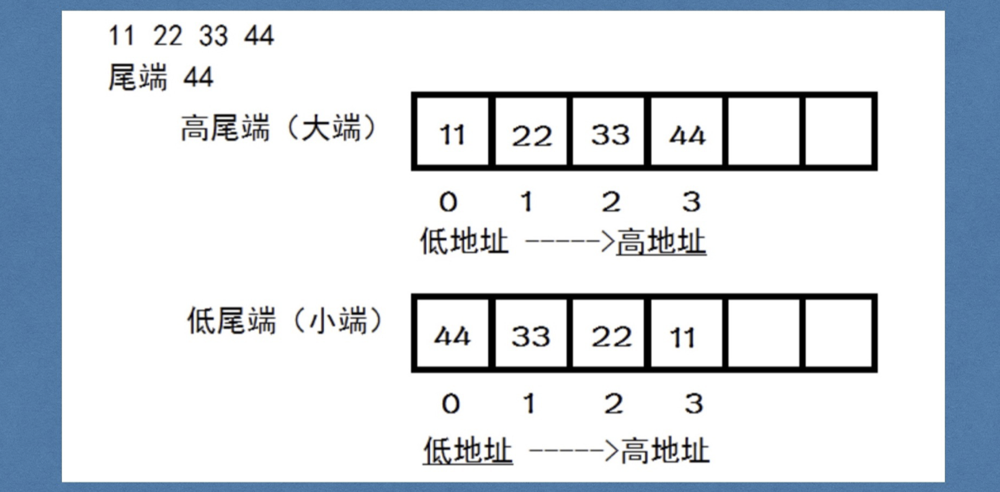

一、授课思路
1. 简单版（区块字段少）
定义结构（区块头的字段比正常的少）
- 前区块哈希
- 当前区块哈希(为了方便编写)
- 数据
创建区块
生成哈希
引入区块链
添加区块
重构代码
2. 升级版（区块字段完整）
- 补充区块字段
- 更新计算哈希函数
- 优化代码

二、授课代码
00_代码仓库
https://github.com/dukedaily/go-bitcoin-demo
创建项目：01_bitcoin
01_v1定义创世块并打印
package main
import "fmt"
const genesisInfo = "The Times 03/Jan/2009 Chancellor on brink of second bailout for banks"
type Block struct {
//前区块哈希值
PreHash []byte
//当前区块哈希值
Hash []byte
//区块数据
Data []byte
}
//创建区块
func NewBlock(data string, prevHash []byte) *Block {
block := Block{
PreHash: prevHash,
//Hash:
Data: []byte(data),
}
return &block
}
func main() {
//fmt.Printf("hello\n")
block := NewBlock(genesisInfo, []byte{0x0000000000000000})
fmt.Printf("PreHash : %x\n", block.PreHash)
fmt.Printf("Hash : %x\n", block.Hash)
fmt.Printf("Data : %s\n", block.Data)
}
02_v1实现SetHash函数
func (block *Block) SetHash() {
var blockByteInfo []byte //存储拼接好的数据，最后作为sha256函数的参数
//1. 拼接当前区块的数据
blockByteInfo = append(blockByteInfo, block.PreHash...)
blockByteInfo = append(blockByteInfo, block.Data...)
//2. 对数据进行哈希处理：sha256
//func Sum(data []byte) [Size]byte {
hash := sha256.Sum256(blockByteInfo) //传入参数时切片， 返回值是一个32位的数组
//3. 把哈希添加到我们区块Hash字段
block.Hash = hash[:]
}
在NewBlock中引用
//创建区块
func NewBlock(data string, prevHash []byte) *Block {
block := Block{
PreHash: prevHash,
//Hash:
Data: []byte(data),
}
block.SetHash()
return &block
}
03_引入区块链结构（区块的数组）
定义结构
//目标：实现区块链
//将产生的区块串接起来
type BlockChain struct {
// 定一个区块链的结构：定一个[]*Block
Blocks []*Block
}
创建区块链
func NewBlockChain() *BlockChain {
// 对这个区块链进行初始化，就是把创世块作为第一个元素添加进去
genesisBlock := NewBlock(genesisInfo, []byte{byte(0x0000000000000000)})
bc := BlockChain{[]*Block{genesisBlock}}
return &bc
}
改写main.go
func main() {
//fmt.Printf("hello world!")
//block := GenesisBlock(genesisInfo, []byte{})
bc := NewBlockChain()
for i, block := range bc.Blocks {
fmt.Println("======== block height : ", i, "=======")
fmt.Printf("PreHash : %x\n", block.PreHash)
fmt.Printf("Hash : %x\n", block.Hash)
fmt.Printf("Data : %s\n", block.Data)
}
}
04_v1实现AddBlock
func (bc *BlockChain) AddBlock(data string) {
//1. 产生区块
// >1. 数据 和前区块的哈希值
// >2. 通过数组的下标，拿到最后一个区块的哈希值，这个哈希值就是我们新区块的前哈希值
blockLen := len(bc.Blocks)
lastBlock := bc.Blocks[blockLen-1]
//最后一个区块的哈希值是新区块的前哈希
prevBlockHash := lastBlock.Hash
block := NewBlock(data, prevBlockHash)
//2. 向bc中添加新区块
bc.Blocks = append(bc.Blocks, block)
}
改写main.go
func main() {
//fmt.Printf("hello world!")
bc := NewBlockChain()
bc.AddBlock("班长向老师转了1枚比特币！")
bc.AddBlock("班长又向老师转了1枚比特币！")
for i, block := range bc.Blocks {
fmt.Println("======== block height : ", i, "=======")
fmt.Printf("PreHash : %x\n", block.PreHash)
fmt.Printf("Hash : %x\n", block.Hash)
fmt.Printf("Data : %s\n", block.Data)
}
}
05_重构代码(创建block.go blockchain.go)
创建block.go，blockchain.go，将相关代码移到各自文件中
block.go
package main
import "crypto/sha256"
const genesisInfo = "The Times 03/Jan/2009 Chancellor on brink of second bailout for banks"
type Block struct {
//前区块哈希值
PreHash []byte
//当前区块哈希值
Hash []byte
//区块数据
Data []byte
}
//产生创世块
func GenesisBlock(data string, prevBlockHash []byte) *Block {
return NewBlock(data, prevBlockHash)
}
func NewBlock(data string, prevBlockHash []byte) *Block {
block := Block{
PreHash: prevBlockHash,
Hash: []byte{}, //先填为空，后面再进行计算
Data: []byte(data)}
//提供一个设置哈希的方法
block.SetHash()
return &block
}
func (block *Block) SetHash() {
var blockByteInfo []byte //存储拼接好的数据，最后作为sha256函数的参数
//1. 拼接当前区块的数据
blockByteInfo = append(blockByteInfo, block.PreHash...)
blockByteInfo = append(blockByteInfo, block.Data...)
//2. 对数据进行哈希处理：sha256
//func Sum(data []byte) [Size]byte {
hash := sha256.Sum256(blockByteInfo) //传入参数时切片， 返回值是一个32位的数组
//3. 把哈希添加到我们区块Hash字段
block.Hash = hash[:]
}
blockchain.go
package main
//目标：实现区块链
//将产生的区块串接起来
type BlockChain struct {
// 定一个区块链的结构：定一个[]*Block
Blocks []*Block
}
func NewBlockChain() *BlockChain {
// 对这个区块链进行初始化，就是把创世块作为第一个元素添加进去
genesisBlock := GenesisBlock(genesisInfo, []byte{})
bc := BlockChain{[]*Block{genesisBlock}}
return &bc
}
func (bc *BlockChain) AddBlock(data string) {
//1. 产生区块
// >1. 数据 和前区块的哈希值
// >2. 通过数组的下标，拿到最后一个区块的哈希值，这个哈希值就是我们新区块的前哈希值
blockLen := len(bc.Blocks)
lastBlock := bc.Blocks[blockLen-1]
//最后一个区块的哈希值是新区块的前哈希
prevBlockHash := lastBlock.Hash
block := NewBlock(data, prevBlockHash)
//2. 向bc中添加新区块
bc.Blocks = append(bc.Blocks, block)
}
main文件仅保留main.go即可
main.go
package main
import (
"fmt"
)
func main() {
//fmt.Printf("hello world!")
//block := GenesisBlock(genesisInfo, []byte{})
bc := NewBlockChain()
bc.AddBlock("班长向老师转了1枚比特币！")
bc.AddBlock("班长又向老师转了1枚比特币！")
for i, block := range bc.Blocks {
fmt.Println("======== block height : ", i, "=======")
fmt.Printf("PreHash : %x\n", block.PreHash)
fmt.Printf("Hash : %x\n", block.Hash)
fmt.Printf("Data : %s\n", block.Data)
}
}
06_补充Block字段（完整）
type Block struct {
//版本号
Version uint64
//前区块哈希值
PreHash []byte
//梅克尔根(就是一个哈希值，v4版本介绍）
MerKleRoot []byte
//时间戳
TimeStamp uint64
//难度值(调整比特币挖矿的难度)
Difficulty uint64
//随机数，这就是挖矿时所要寻找的数
Nonce uint64
//当前区块哈希值(为了方便实现，所以将区块的哈希值放到了区块中)
Hash []byte
//区块数据
Data []byte
}
改写NewBlock
func NewBlock(data string, prevBlockHash []byte) *Block {
block := Block{
Version: 00,
PreHash: prevBlockHash,
MerKleRoot: []byte{}, //先填为空，v4版本再详解
TimeStamp: uint64(time.Now().Unix()),
Difficulty: 100,
Nonce: 100,
//Hash: []byte{}, //先填为空，后面再进行计算
Data: []byte(data)}
//提供一个设置哈希的方法
block.SetHash()
return &block
}
07_根据完整Block重写SetHash
func (block *Block) SetHash() {
var blockByteInfo []byte //存储拼接好的数据，最后作为sha256函数的参数
//1. 拼接当前区块的数据
blockByteInfo = append(blockByteInfo, block.PreHash...)
blockByteInfo = append(blockByteInfo, block.Data...)
blockByteInfo = append(blockByteInfo, block.MerKleRoot...)
blockByteInfo = append(blockByteInfo, uint64ToByte(block.Version)...)
blockByteInfo = append(blockByteInfo, uint64ToByte(block.TimeStamp)...)
blockByteInfo = append(blockByteInfo, uint64ToByte(block.Difficulty)...)
blockByteInfo = append(blockByteInfo, uint64ToByte(block.Nonce)...)
//2. 对数据进行哈希处理：sha256
//func Sum(data []byte) [Size]byte {
hash := sha256.Sum256(blockByteInfo) //传入参数时切片， 返回值是一个32位的数组
//3. 把哈希添加到我们区块Hash字段
block.Hash = hash[:]
}
- 辅助函数
func uint64ToByte(num uint64) []byte {
//func Write(w io.Writer, order ByteOrder, data interface{}) error {
var buffer bytes.Buffer
//将数据以二进制形式保存到buffer中
err := binary.Write(&buffer, binary.BigEndian/*大端对齐vs小端对齐*/, num)
if err != nil {
log.Panic(err)
}
return buffer.Bytes()
}
- binary序列化
- binary.Write
err := binary.Write(&buffer, binary.BigEndian, num)
这个函数的目的是将任意的数据转换成byte字节流，这个过程叫做序列化
- binary.Read
同样，可以通过binary.Read方式进行反序列化，从字节流转回原始结构。
binary.Read(buf, binary.LittleEndian, &num)
- 特点
特点：高效。
缺点：如果在编码的结构中有不确定长度的类型，那么会报错。这时候可以使用gob来编码。
08_大端对齐vs小端对齐
- 概述
大端模式：数据的低位保存在内存的高地址中，而数据的高位保存在内存的低地址中，这种存储模式就类似把数据当做字符串顺序处理，例如:数据中两个字节按顺序为：FE 10 ，它表示的一个数就是0xFE10。换句话说：内存的低地址存放着数据高位；
小端模式：数据的低位保存在内存的低地址中，而数据的高位保存在内存的高地址中，这种存储方式就是将地址的高低和数据的位结合起来，前面的例子按照小端模式表示，应该为：0x10FE。换句话说：内存的低地址存放着数据低位
11 22 33 44
低 -》 高
高尾端-》 大端对齐
44 33 22 11
低 -> 高
低尾端 -》小端对齐
- 图示

- 小结
大端对齐=高尾端
小段对齐=低尾端
高尾端：高的内存单元存放字符串的尾部。
低尾端：低的内存单元存放字符串的尾部。
- demo验证
package main
import (
"fmt"
"unsafe" //go语言的sizeof
)
func main() {
s := int16(0x1234)
b := int8(s)
//0x1234
// 低 --------》 高
// 12 34 -> 大端 -> 高尾端
// 34 12 -> 小端 -> 低尾端
fmt.Println("int16字节大小为", unsafe.Sizeof(s)) //结果为2
if 0x34 == b {
fmt.Println("little endian")
} else {
fmt.Println("big endian")
}
}
09_使用bytes.Join改写SetHash函数
demo/stringJoin.go
package main
import (
"strings"
"fmt"
)
func main() {
strArray := []string{"hello", "world", "itcast"}
result := strings.Join(strArray, "+")
fmt.Printf("result :%s\n", result)
result = strings.Join(strArray, "")
fmt.Printf("result :%s\n", result)
}
demo/bytesJoin.go
package main
import (
"bytes"
"fmt"
)
func main() {
//func Join(s [][]byte, sep []byte) []byte {
byteArray := [][]byte{
[]byte("Hello"),
[]byte("World"),
[]byte("Itcast")}
result := bytes.Join(byteArray, []byte(""))
fmt.Printf("result : %s\n", string(result))
}
改写SetHash
func (block *Block) SetHash() {
var blockByteInfo []byte //存储拼接好的数据，最后作为sha256函数的参数
//1. 拼接当前区块的数据
/*
blockByteInfo = append(blockByteInfo, block.PreHash...)
blockByteInfo = append(blockByteInfo, block.Data...)
blockByteInfo = append(blockByteInfo, block.MerKleRoot...)
blockByteInfo = append(blockByteInfo, uint64ToByte(block.Version)...)
blockByteInfo = append(blockByteInfo, uint64ToByte(block.TimeStamp)...)
blockByteInfo = append(blockByteInfo, uint64ToByte(block.Difficulty)...)
blockByteInfo = append(blockByteInfo, uint64ToByte(block.Nonce)...)
*/
tmp := [][]byte{
block.PreHash,
block.Data,
block.MerKleRoot,
uint64ToByte(block.Version),
uint64ToByte(block.TimeStamp),
uint64ToByte(block.Difficulty),
uint64ToByte(block.Nonce)}
blockByteInfo = bytes.Join(tmp, []byte(""))
...
}